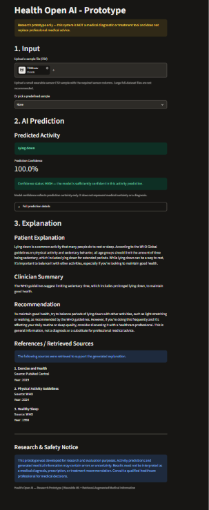
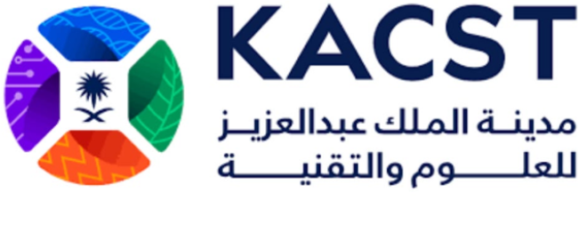
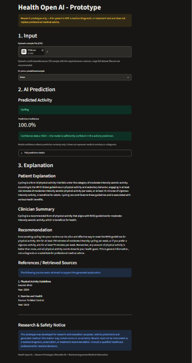
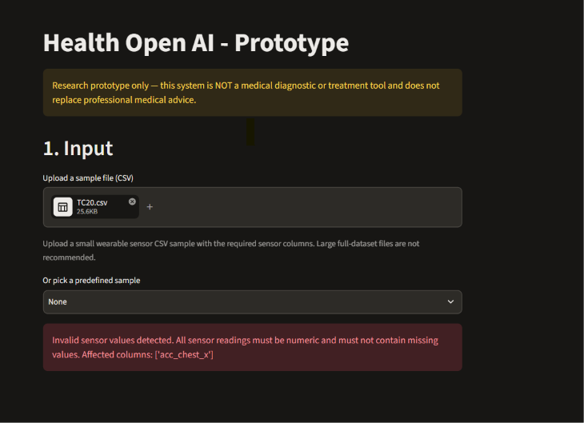

KACST (Digital Health Institute)
Riyadh, Saudi Arabia
Jun – Dec 2026
(6 months)
Co-op Student · Project Coordinator
Trusted WHO/CDC/NICE sources answered by a local Phi-3 Mini model.
Raised hit rate from 76.7% to 90% by tuning Top-K.
Graded 50 answers and compared LLM-only vs. LLM + RAG.
Python, Java, SPARQL, Git
RAG, ChromaDB, Ollama
Confidence in my abilities
Ownership from end to end
Bilingual reporting, teamwork
Time management
Real-world AI research
Safety over raw metrics

Digital Health Institute · Health Open AI
KACST (Digital Health Institute)
Riyadh, Saudi Arabia
June – December 2026 (6 months)
Co-op Student · Project Coordinator (RAG & LLM)
Java, XML, Jena & SPARQL, ML and sentiment analysis.
Built the medical RAG with a local Phi-3 model.
Hit rate 76.7% → 90%; graded 50 answers for safety.
20-case validation, final report & presentation.
Python, RAG, ChromaDB, Ollama, Streamlit, Git
Hit rate, MRR, NDCG, LOSO, answer grading
Coordination, bilingual reports, deadlines
RAG must be tested — more data ≠ safer answers

→ Docs, small tests, asked early
→ Issue log, pinned versions, Git baseline
→ Safer prompt, evidence fallback, re-tests
“Good AI isn’t only accurate — it’s grounded in evidence, safe and honest about its limits. I’ve grown professionally and personally.”
KACST
(Digital Health)
Riyadh,
Saudi Arabia
Jun – Dec 2026
(6 months)
Co-op Student
(AI & Data)
Medical RAG + local LLM explanations
Coordinated three trainee teams
Hit rate 76.7% → 90%; safer prompts
18/20 pass · final technical report
Hands-on AI, RAG and evaluation
Communication, teamwork, time
Confidence and adaptability
Research workflow and safety
Met every weekly deadline
Clear bilingual reports
Health data kept local
Reported limits honestly
I’m grateful for this opportunity. My advice to future co-op students: ask early, document everything, and back every result with evidence.